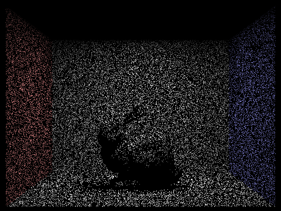

CS 184: Computer Graphics and Imaging, Spring 2023
Project 3-1: Path Tracer
Carolyn Wang
Overview
In this project, I learned about enhancing the quality rendered images through ray tracing (Monte Carlo integration), efficient geometric intersections (Möller–Trumbore algorithm), and adaptive sampling to reduce noise. I explored ray generation and how rays from a camera intersect with objects in the scene. Then, I used bounding volume hierarchy (BVH) acceleration to significantly improve rendering times for complex scenes by optimizing ray-primitive intersection tests. I also implemented direct and indirect lighting (uniform hemisphere sampling and importance sampling) to show how importance sample can be more efficient and less noisy. Finally I implemented adaptive sampling which dynamically adjusts sample counts per pixel based on variance to allocate compute to more challenging areas of the image.
Part 1: Ray Generation and Scene Intersection (20 Points)
Walk through the ray generation and primitive intersection parts of the rendering pipeline.
Camera::generate_ray():
I started by normalizing image coordinates (x,y) into a ray in the world space. Then I
converted the fields of view from degrees to radiances and mapped the normalized (x,y) coordinates to the sensor's
position in camera space. To create a ray in the camera space, I constructed a normalized ray starting from the
camera's position in camera space and passing through the point on the sensor. Then, I uxed the camera's position and
camera-to-world rotation matrix to transform the ray's origin and direction from camera space to world space.
PathTracer::raytrace_pixel():
I started by generating multiple rays per pixel using generate_ray() to sample
the radiance. For each generated ray, I estimate the radiance along that ray. Then I performed Monte Carlo integration
to estimate the integral of radiance over the pixel area. Specifically, I averaged the radiance along several rays
shot through the pixel.
Explain the triangle intersection algorithm you implemented in your own words.
Triangle::has_intersection():
This function checks if there's an intersection between the triangle and the
ray. The Möller-Trumbore algorithm calculates whether a ray intersects a triangle and where the intersection occurs.
Triangle::intersect():
If the intersection exists, this function computes the intersection point, the
interpolated normal, and updates the Intersection structure (the intersection distance t, a pointer to the primitive,
and the BSDF of the material at the intersection point). The Möller-Trumbore algorithm uses the barycentric
coordinates of the intersection point on the triangle to interpolate the vertex normals.
Show images with normal shading for a few small .dae files.
 CBempty.dae
CBempty.dae
 CBspheres.dae
CBspheres.dae
Part 2: Bounding Volume Hierarchy (20 Points)
Walk through your BVH construction algorithm. Explain the heuristic you chose for picking the splitting point.
BVHAccel::construct_bvh():
I implemented a more efficient BVH structure that recursively processes the left
and right children of each node. More specifically, I first computed the bounding box for all primitives in [start,
end). Then, I chose the optimal axis for splitting to get a balanced distribution of primitives across all child
nodes. The function partitions the primitives around the split point.
To chose the splitting point, this method takes the average of centroids along the chosen axis, where the
chosen axis is the bounding box's largest dimension. The base case for this recursive function is to create a leaf
node if the current number of primitives is less or equal to max_leaf_size. Overall, this significantly improves the
speed and performance of the BVH in rendering tasks.
BVHAccel::has_intersection():
checks if there's any intersection between the input ray and the primitives
within the BVH. It stops as soon as an intersection is found.
BVHAccel::intersect():
finds the nearest intersection between the input ray and the primitives within the BVH
Show images with normal shading for a few large .dae files that you can only render with BVH acceleration.
maxplanck.dae (0.1704s)
cblucy.dae (0.1197s)
Compare rendering times on a few scenes with moderately complex geometries with and without BVH acceleration.
Present your results in a one-paragraph analysis.
The maxplanck scene took 0.1704 seconds to complete using my BVH acceleration method compared to the 40 seconds it
would have taken on the Hive machines. This is an over 234 times speed up. The cblucy scene took 0.1197 seconds to
complete using my BVH acceleration method compared to the 1.67 seconds it would have taken on the Hive machine. This
is around a 14 times speed up.
Part 3: Direct Illumination (20 Points)
Walk through both implementations of the direct lighting function.
PathTracer::estimate_direct_lighting_hemisphere():
The goal here is to estimate the amount of light arriving
at an intersection point hit_p from all directions over the hemisphere centered at the point. I use a sampling loop to
sample points uniformly from the hemisphere centered at the intersection point for each sample direction. Then for
each point, I check if it hits a light source. If it does, I use the BSDF reflection equation to calculate how much of
this light ray is reflected towards the camera. Finally I take the average of these reflections by dividing the sum by
the number of samples.
PathTracer::estimate_direct_lighting_importance():
This function samples only from the lights instead of
uniformly from a hemisphere. It iterates over each light sources in the scene.
For delta lights, it takes a single sample from the light source to estimate its contribution to the
intersection point. The method also casts a shadow ray from the intersection point towards the light source to check
for occlusions. The final light ray is calculated from the light's intensity, the cosine term, and the surface's BSDF,
divided by the probability density function of the light sampling.
For area lights, the function takes multiple samples and similarly checks for occlusions using a shadow ray.
If the ray is not occluded, it sums up the contributions based on the light intensity, cosine term, BSDF, and pdf. The
total contribution is then averaged over the number of samples.
Show some images rendered with both implementations of the direct lighting function.
|
Uniform Hemisphere Sampling
|
Light Sampling
|
|
CBBunny.dae, -s 16 -l 8
|
CBBunny.dae, -s 16 -l 8
|
|
CBspheres.dae, -s 64 -l 32
|
 CBspheres.dae, -s 64 -l 32
CBspheres.dae, -s 64 -l 32
|
Light Sampling
CBBunny.dae, -s 64 -l 32
Light Sampling
dragon.dae, -s 64 -l 32
Focus on one particular scene with at least one area light and compare the noise levels in soft shadows when
rendering with 1, 4, 16, and 64 light rays (the -l flag) and with 1 sample per pixel (the -s flag) using light
sampling, not uniform hemisphere sampling.
|

1 Light Ray (CBbunny.dae)
|
4 Light Rays (CBbunny.dae)
|
|
16 Light Rays (CBbunny.dae)
|
64 Light Rays (CBbunny.dae)
|
As the number of light rays samples increases, the sparsity of the image decreases. This is because more samples
results in a more comprehensive rendering.
Compare the results between uniform hemisphere sampling and lighting sampling in a one-paragraph analysis.
Uniform hemisphere sampling seems to render spottier results because the many sampled directions may not all
contribute significantly to the final lighting at a point. Since we are randomly selecting directions over the
entire hemisphere above a point, hemisphere sampling results seem to have higher variance and noise. In comparison,
importance sampling focusing on sampling on directions that are more likely to contribute to the scene's lighting.
This method runs more efficiently, with less variance and noise by concentrating samples on the most significant
contributors to the lighting equation. Importance sampling produces higher quality results.
Part 4: Global Illumination (20 Points)
Walk through your implementation of the indirect lighting function.
PathTracer::at_least_one_bounce_radiance():
This function recursively calls itself to simulate light when it bounces off surfaces, creating indirect lighting. It
sums together light from one bounce and from extra light bounces from a point. To prevent the recursive function from
infinitely bouncing rays, I used the Russian Roulette technique to probabilistically terminate the recursion. The
function will also terminate if it reaches the maximum ray depth. If a given ray intersects with another surface and
the recursion continues, the function generates a ray in the sampled direction from the hit point. Each ray’s indirect
lighting contribution is calculated from the BSDF value, the cosine of the angle between the incoming direction and
the surface normal, and the inverse of the pdf and the Russian Roulette probability. Finally, function returns the
summed indirect lighting (L_out) from this path.
PathTracer::est_radiance_global_illumination():
This function returns the sum of direct light that reaches the camera without any bounces (zero-bounce radiance) and
indirect illumination (at_least_one_bounce_radiance).
Show some images rendered with global (direct and indirect) illumination. Use 1024 samples per pixel.
bunny.dae
-t 8 -s 1024 -l 16 -m 5 -r 480 360 -f bunny_1024s.png ../dae/sky/CBbunny.dae
CBspheres_lambertian.dae
-t 8 -s 1024 -l 16 -m 5 -r 480 360 -f spheres_1024s.png ../dae/sky/CBspheres_lambertian.dae
Pick one scene and compare rendered views first with only direct illumination, then only indirect illumination. Use
1024 samples per pixel. (You will have to edit PathTracer::at_least_one_bounce_radiance(...) in your code to
generate these views.)
|
Only direct illumination (CBspheres_lambertian.dae)
|
Only indirect illumination (CBspheres_lambertian.dae)
|
As shown in the images above, direct illumination only captures that reach the camera without any bounces
(produced by the zero-bounce radiance function). So only the light source above is rendered.
In contrast, indirect illumination (produced by the at_least_one_bounce_radiance function) shows all of the light
rays that recursively bounce of surfaces in the scene. Therefore it illuminates the objects and actual scene.
For CBbunny.dae, render the mth bounce of light with max_ray_depth set to 0, 1, 2, 3, 4, and 5 (the -m flag), and
isAccumBounces=false. Explain in your writeup what you see for the 2nd and 3rd bounce of light, and how it
contributes to the quality of the rendered image compared to rasterization. Use 1024 samples per pixel.
 max_ray_depth = 0 (CBbunny.dae)
max_ray_depth = 0 (CBbunny.dae)
|
max_ray_depth = 1 (CBbunny.dae)
|
 max_ray_depth = 2 (CBbunny.dae)
max_ray_depth = 2 (CBbunny.dae)
|
 max_ray_depth = 3 (CBbunny.dae)
max_ray_depth = 3 (CBbunny.dae)
|
|
max_ray_depth = 4 (CBbunny.dae)
|
max_ray_depth = 5 (CBbunny.dae)
|
The Russian Roulette technique prevents the recursive function from infinitely bouncing rays by probabilistically
terminating the recursion. The function will also terminate if it reaches the maximum ray depth. We can see a
plataeu in the number of ray bounce when the max number of rays increases, since there is not a big difference
between 4 and 100 max bounces. This means that most ray bounces are being terminated by the roulette function
instead of the max ray bounces cap.
For CBbunny.dae, compare rendered views with max_ray_depth set to 0, 1, 2, 3, 4, and 5(the -m flag). Use 1024
samples per pixel.
|
max_ray_depth = 0 (CBbunny.dae)
|
max_ray_depth = 1 (CBbunny.dae)
|
|
max_ray_depth = 2 (CBbunny.dae)
|
max_ray_depth = 3 (CBbunny.dae)
|
|
max_ray_depth = 4 (CBbunny.dae)
|
max_ray_depth = 5 (CBbunny.dae)
|
In comparison, when we accumulate light bounces, the image becomes progressively more accurate and sharper with
increased numbers of light ray bounces. When light rays reflect off more surfaces in the scene, they convey more
information about the scene. It seems like the quality becomes less noticeable after 3 maximum bounces.
For CBbunny.dae, output the Russian Roulette rendering with max_ray_depth set to 0, 1, 2, 3, 4, and 100(the -m
flag). Use 1024 samples per pixel.
|
max_ray_depth = 0 (CBbunny.dae)
|
max_ray_depth = 1 (CBbunny.dae)
|
|
max_ray_depth = 2 (CBbunny.dae)
|
max_ray_depth = 3 (CBbunny.dae)
|
|
max_ray_depth = 4 (CBbunny.dae)
|
max_ray_depth = 100 (CBbunny.dae)
|
Pick one scene and compare rendered views with various sample-per-pixel rates, including at least 1, 2, 4, 8, 16,
64, and 1024. Use 4 light rays.
|
1 sample per pixel (CBspheres_lambertian.dae)
|
2 samples per pixel (CBspheres_lambertian.dae)
|
 4 samples per pixel (CBspheres_lambertian.dae)
4 samples per pixel (CBspheres_lambertian.dae)
|
8 samples per pixel (CBspheres_lambertian.dae)
|
|
16 samples per pixel (CBspheres_lambertian.dae)
|
 64 samples per pixel (CBspheres_lambertian.dae)
64 samples per pixel (CBspheres_lambertian.dae)
|
|
1024 samples per pixel (CBspheres_lambertian.dae)
|
As the number of samples per pixel increases, the images become increasingly sharper and less grainy. The last image
with 1024 samples is almost completely smooth. Since there are only 4 light rays, lower numbers of samples per pixel
means that there will be pixel gaps and the full image cannot be captured.
Part 5: Adaptive Sampling (20 Points)
Explain adaptive sampling. Walk through your implementation of the adaptive sampling.
Adaptive sampling dynamically adjusts the number of samples per pixel based on the variance of each sample’s light contribution. This function is more efficient because it allocates more compute to high variance areas of the photo that are harder to render and less compute to areas that are easier to render (low variance areas).
To implement adaptive sampling, I used the computed mean, variance, and the number of samples to calculate the criteria for convergence criterion. The convergence criterion is based on the variance being sufficiently low or the mean being stable within a 95% confidence interval. If this criterion is met, then the pixel color has converged and we can break out of the loop. Otherwise, if the pixel hasn't converged then we continue sampling until the pixel converges or we reach the maximum number of samples (ns_aa). Once a pixel has either converged every samplesPerBatch pixels or reached the maximum number of samples, I compute its final color based on the accumulated samples.
Pick two scenes and render them with at least 2048 samples per pixel. Show a good sampling rate image with clearly
visible differences in sampling rate over various regions and pixels. Include both your sample rate image, which
shows your how your adaptive sampling changes depending on which part of the image you are rendering, and your
noise-free rendered result. Use 1 sample per light and at least 5 for max ray depth.
I could not get my images to render properly for the sample rate image